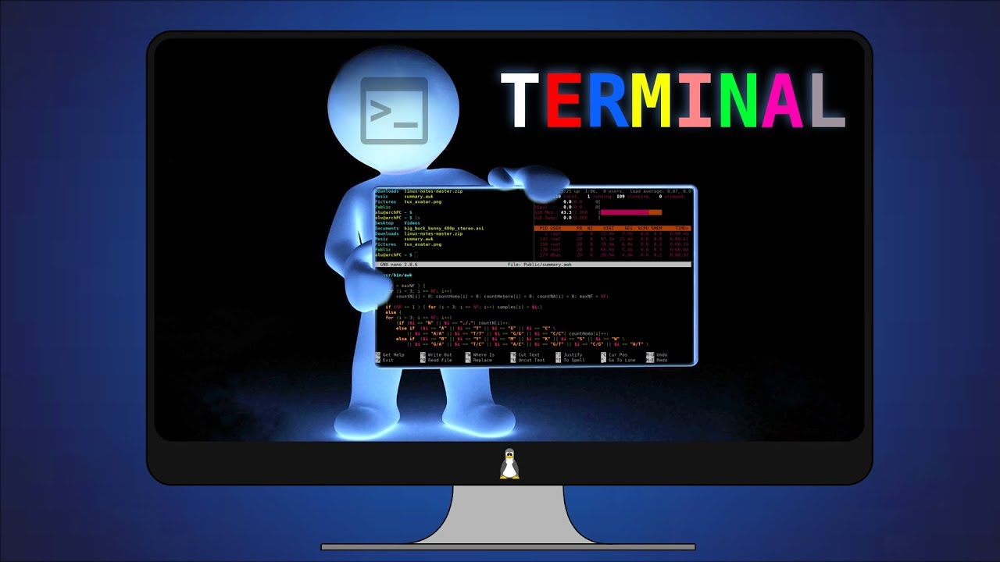

🐧 Unidad Didáctica 4 — Administración Básica de Linux¶

⏱️ Temporalización global¶
- Duración: 30 h (18 sesiones) / 160 h
- Lunes: 2 h · Martes: 2 h · Miércoles: 1 h
- Bloque: Sistemas Operativos y Gestión de la Información
- Secuencia anual: UT 4 / 6
Meta · Gestionar un sistema GNU/Linux a nivel básico (usuarios, permisos, servicios y scripts), aplicando buenas prácticas de seguridad, documentación y sostenibilidad.
🎯 ¿Qué vas a aprender?¶
- Instalación mínima de una distribución GNU/Linux (CLI) y primeros pasos.
- Navegación por el sistema de archivos y gestión de permisos.
- Administración de paquetes y actualizaciones con APT/YUM.
- Gestión de usuarios, grupos, servicios y procesos.
- Automatización de tareas mediante scripts Bash.
- Monitorización básica y optimización de recursos.
🔎 ¿Qué haremos?¶
- Talleres prácticos en VirtualBox / WSL.
- Desafíos de terminal gamificados con Terminus.
- Creación de scripts de mantenimiento automático.
- Proyecto exprés: “Servidor LAMP en 45 min” con defensa grabada.
🎯 Criterios de evaluación y Resultados de aprendizaje¶
- CE 25. Instala y documenta una distribución Linux mínima.
- CE 26. Gestiona usuarios, grupos y permisos.
- CE 27. Administra paquetes y repositorios.
- CE 28. Configura y controla servicios del sistema.
- CE 29. Manipula scripts simples para tareas recurrentes.
- CE 30. Monitoriza recursos y aplica ajustes básicos.
- CE 31. Resuelve incidencias comunes de forma sistemática.
- CE 32. Documenta las intervenciones con estándares profesionales. :contentReference[oaicite:0]{index=0}
- CE 55. Colabora eficazmente y usa repositorios compartidos.
- CE 58. Aprende de forma autónoma y reflexiva.
- CE 61. Integra prácticas de ciberseguridad básicas.
- CE 64 / 67. Optimiza consumo y promueve sostenibilidad.
📑 Competencias profesionales y para la empleabilidad¶
- a) Configurar y explotar sistemas informáticos.
- b) Aplicar técnicas de seguridad.
- o) Elaborar y mantener documentación técnica.
- q) Resolver contingencias con iniciativa y autonomía.
📏 ¿Cómo se evalúa?¶
- Prácticas guiadas de terminal, servicios y scripting.
- Cuestionarios en AULES sobre comandos y arquitectura.
- Portafolio digital con capturas, scripts y evidencias.
- Proyecto exprés + vídeo-defensa de 5 min.
🗂️ Planificación por actividades¶
| # | Tipo | Actividad | RA / RAT · CE | Ses. | H |
|---|---|---|---|---|---|
| 1 | Intro | Kahoot «Comandos esenciales» | RA4 · RAT2 → CE 25, 58 | 1 | 1 |
| 2 | Intro | Terminal gamificado con Terminus | RA4 → CE 26 | 2 | 2 |
| 3 | Intro | Instalación mínima Debian CLI | RA4 → CE 25 | 3 | 2 |
| 4 | Des. | Navegación & permisos (ls -l, chmod, chown) |
RA4 → CE 26 | 4-5 | 3 |
| 5 | Des. | Gestión de paquetes (apt, snap, dnf) |
RA4 → CE 27 | 6 | 2 |
| 6 | Des. | Servicios con systemd y logs (journalctl) |
RA4 → CE 28 | 7-8 | 3 |
| 7 | Des. | Scripting Bash básico (variables, loops) | RA4 · RAT2 → CE 29, 58 | 9-10 | 3 |
| 8 | Des. | Monitorización (htop, iotop, du, df) |
RA4 → CE 30 | 11 | 2 |
| 9 | Compl. | Debate “Linux & sostenibilidad” | RAT4 → CE 64 / 67 | 12 | 1 |
| 10 | Des. | Documenta tu sistema en Markdown | RA4 · RAT1 → CE 32, 55 | 13-14 | 3 |
| 11 | Ap. | Proyecto “Servidor LAMP en 45 min” | RA4 · RAT1-4 → CE 25-32, 55-67 | 15-17 | 4 |
| 12 | Eval. | Test + checklist PRL + defensa proyecto | RA4 · RAT1-4 | 18 | 2 |
Las sesiones y horas son orientativas y se ajustarán al progreso del grupo.
1. Introducción¶
Linux domina servidores, cloud y DevOps. Dominar su administración básica es imprescindible para el perfil profesional de DAW, permitiendo desplegar servicios web, automatizar tareas y garantizar seguridad y eficiencia.
2. Objetivos didácticos¶
- Instalar y configurar distribuciones Linux adaptadas al contexto.
- Gestionar usuarios, grupos, permisos y sistemas de archivos.
- Administrar software y servicios del sistema de forma segura.
- Automatizar tareas rutinarias con scripts Bash.
- Monitorizar rendimiento y aplicar ajustes de optimización.
- Documentar procedimientos siguiendo estándares técnicos. :contentReference[oaicite:1]{index=1}
3. Contenidos¶
- Instalación de GNU/Linux: requisitos, particionado, GRUB.
- Administración de paquetes (APT, DNF, Snap).
- Estructura de directorios y permisos (
chmod, ACL). - Usuarios, grupos y autenticación.
- Servicios y procesos (
systemd,ps,top). - Scripts Bash: sintaxis básica, variables, condiciones, bucles.
- Monitorización (
htop,journalctl,du,df). - Seguridad básica: cortafuegos
ufw, actualizaciones, buenas prácticas. - Documentación técnica: Markdown, estándares wiki.
4. Actividades y secuenciación¶
Fase 1: Introducción y motivación (Sesiones 1 a 3)¶
🧠 Sesión 1: ¿Qué comando hace qué?¶
- Actividad: Quiz de 15 preguntas en Kahoot + nube de palabras con comandos conocidos.
- Implementación:
- Lanzamos Kahoot para diagnosticar conocimientos.
- Construimos nube de comandos en Padlet.
- Agrupamos comandos por categoría (navegación, administración).
- Criterios: CE 25, 58 · Instrumentos: Kahoot, observación directa.
💻 Sesión 2: Terminus — aventura de terminal¶
- Actividad: Juego por niveles para aprender
cd,mkdir,cat,grep. - Implementación:
- Instalamos Terminus y superamos 5 misiones cooperativas.
- Cada misión guarda evidencias en carpeta compartida.
- Criterios: CE 26 · Instrumentos: Rúbrica de logros, portafolio.
🖥️ Sesión 3: Instalación mínima Debian CLI¶
- Actividad: Instalamos Debian “netinst” en VM (sin entorno gráfico).
- Implementación:
- Creación de VM (2 GB RAM, 20 GB disco).
- Particionado guiado y usuario sudo.
- Primer arranque y actualización inicial (
apt update). - Criterios: CE 25 · Instrumentos: Checklist instalación, captura GRUB.
Fase 2: Desarrollo (Sesiones 4 a 14)¶
🗄️ Sesión 4-5: Archivos, directorios y permisos¶
- Crip notation
rwx, grupos, ACL y casos prácticos de seguridad.
📦 Sesión 6: Paquetes y repositorios¶
apt search,apt install, PPAs vs backports; snapshot antes-después.
🔧 Sesión 7-8: Servicios y logs¶
systemctlstart/enable, sockets, timers; interpretación dejournalctl.
📝 Sesión 9-10: Scripting Bash¶
- Variables, condicionales, bucles; script que limpia temp, actualiza y notifica.
📊 Sesión 11: Monitorización y optimización¶
- Uso de
htop,iotop, logs de disco y red; política de ahorro energético.
♻️ Sesión 12: Debate Sostenible¶
- Comparar consumo Windows vs Linux P-state y gobernadores de CPU.
📚 Sesión 13-14: Documenta tu sistema¶
- Plantilla Markdown (Office 365) + capturas + README script.
Fase 3: Aplicación y evaluación (Sesiones 15 a 18)¶
🚀 Sesiones 15-17: Proyecto “Servidor LAMP en 45 min”¶
- Objetivo: VM con Apache, MariaDB, PHP, firewall activo y script post-install.
- Roles: líder, seguridad, base de datos, documentación.
- Entrega: Vídeo 5 min + repo Git con script y manual.
📝 Sesión 18: Evaluación final¶
- Test AULES (20 items), checklist PRL y defensa del proyecto.
5. Instrumentos de evaluación (resumen)¶
| Instrumento | Evidencias | Sesiones |
|---|---|---|
| Observación directa | Participación, PRL, roles | Todas |
| Rúbricas prácticas | Permisos, servicios, scripts | 4-11 |
| Cuestionarios AULES | Comandos, teoría Linux | 1, 6, 18 |
| Portafolio digital | Markdown + capturas | 2-14 |
| Rúbrica de proyecto | Tiempo, seguridad, documentación | 15-17 |
| Auto/co-evaluación | Reflexión y feedback | 12, 18 |
¡Terminal preparado, comando… ejecutar! 🚀